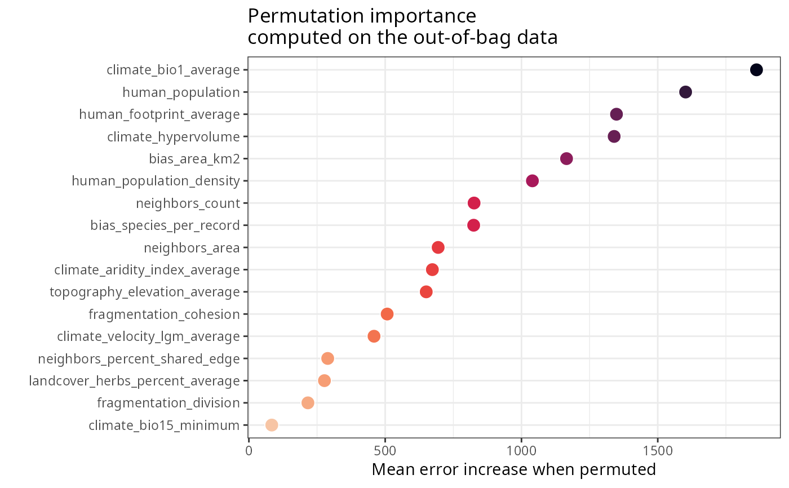
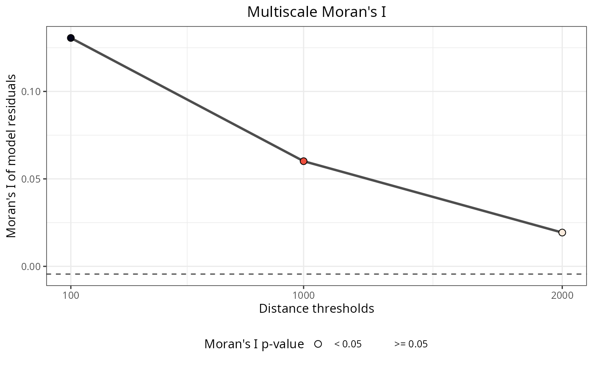

Fits a random forest model using ranger and extends it with spatial diagnostics: residual autocorrelation (Moran's I) at multiple distance thresholds, performance metrics (RMSE, NRMSE via root_mean_squared_error()), and variable importance scores computed on scaled data (via scale).
Usage
rf(
data = NULL,
dependent.variable.name = NULL,
predictor.variable.names = NULL,
distance.matrix = NULL,
distance.thresholds = NULL,
xy = NULL,
ranger.arguments = NULL,
scaled.importance = FALSE,
seed = 1,
verbose = TRUE,
n.cores = parallel::detectCores() - 1,
cluster = NULL
)Arguments
- data
Data frame with a response variable and a set of predictors. Default:
NULL- dependent.variable.name
Character string with the name of the response variable. Must be a column name in
data. For binary response variables (0/1), case weights are automatically computed usingcase_weights()to balance classes. Default:NULL- predictor.variable.names
Character vector with predictor variable names. All names must be columns in
data. Alternatively, accepts the output ofauto_cor()orauto_vif()for automated variable selection. Default:NULL- distance.matrix
Square matrix with pairwise distances between observations in
data. Must have the same number of rows asdata. IfNULL, spatial autocorrelation of residuals is not computed. Default:NULL- distance.thresholds
Numeric vector of distance thresholds for spatial autocorrelation analysis. For each threshold, distances below that value are set to zero when computing Moran's I. If
NULL, defaults toseq(0, max(distance.matrix), length.out = 4). Default:NULL- xy
Data frame or matrix with two columns containing coordinates, named "x" and "y". Not used by this function but stored in the model for use by
rf_evaluate()andrf_tuning(). Default:NULL- ranger.arguments
Named list with ranger arguments. Arguments for this function can also be passed here. The default importance method is 'permutation' instead of ranger's default 'none'. The
x,y, andformulaarguments are not supported. See ranger help for available arguments. Default:NULL- scaled.importance
If
TRUE, variable importance is computed on scaled data using scale, making importance scores comparable across models with different predictor units. Default:FALSE- seed
Random seed for reproducibility. Default:
1- verbose
If
TRUE, display messages and plots during execution. Default:TRUE- n.cores
Number of cores for parallel execution. Default:
parallel::detectCores() - 1- cluster
Cluster object from
parallel::makeCluster(). Not used by this function but stored in the model for use in downstream functions. Default:NULL
Value
A ranger model object with additional slots:
ranger.arguments: Arguments used to fit the model.importance: List with global importance data frame (predictors ranked by importance), importance plot, and local importance scores (per-observation difference in accuracy between permuted and non-permuted predictors, based on out-of-bag data).performance: Model performance metrics including R-squared (out-of-bag and standard), pseudo R-squared, RMSE, and NRMSE.residuals: Model residuals with normality diagnostics (residuals_diagnostics()) and spatial autocorrelation (moran_multithreshold()).
Details
See ranger documentation for additional details. The formula interface is supported via ranger.arguments, but variable interactions are not permitted. For feature engineering including interactions, see the_feature_engineer().
See also
Other main_models:
rf_spatial()
Examples
data(
plants_df,
plants_response,
plants_predictors,
plants_distance
)
m <- rf(
data = plants_df,
dependent.variable.name = plants_response,
predictor.variable.names = plants_predictors,
distance.matrix = plants_distance,
distance.thresholds = c(100, 1000, 2000),
ranger.arguments = list(
num.trees = 50,
min.node.size = 20
),
verbose = FALSE,
n.cores = 1
)
class(m)
#> [1] "rf" "ranger"
#variable importance
m$importance$per.variable
#> variable importance
#> 1 climate_bio1_average 1862.351
#> 2 human_population 1602.213
#> 3 human_footprint_average 1348.596
#> 4 climate_hypervolume 1340.019
#> 5 bias_area_km2 1165.371
#> 6 human_population_density 1040.106
#> 7 neighbors_count 826.140
#> 8 bias_species_per_record 824.618
#> 9 neighbors_area 694.325
#> 10 climate_aridity_index_average 673.057
#> 11 topography_elevation_average 650.577
#> 12 fragmentation_cohesion 507.302
#> 13 climate_velocity_lgm_average 459.043
#> 14 neighbors_percent_shared_edge 289.154
#> 15 landcover_herbs_percent_average 277.146
#> 16 fragmentation_division 216.471
#> 17 climate_bio15_minimum 83.932
m$importance$per.variable.plot

#model performance
m$performance
#> $r.squared.oob
#> [1] 0.5317319
#>
#> $r.squared
#> [1] 0.8737717
#>
#> $pseudo.r.squared
#> [1] 0.9347576
#>
#> $rmse.oob
#> [1] 2306.124
#>
#> $rmse
#> [1] 1431.987
#>
#> $nrmse
#> [1] 0.4133911
#>
#> $auc
#> [1] NA
#>
#autocorrelation of residuals
m$residuals$autocorrelation$per.distance
#> distance.threshold moran.i moran.i.null p.value
#> 1 100 0.13056941 -0.004424779 1.348179e-05
#> 2 1000 0.06011484 -0.004424779 2.425928e-05
#> 3 2000 0.01931070 -0.004424779 1.781684e-02
#> interpretation
#> 1 Positive spatial correlation
#> 2 Positive spatial correlation
#> 3 Positive spatial correlation
m$residuals$autocorrelation$plot

#model predictions
m$predictions$values
#> [1] 5291.4899 5578.2987 1589.6221 7102.8035 10067.5064 3055.0196
#> [7] 4954.8124 5759.2277 2948.4820 4335.4926 3102.5294 2873.0971
#> [13] 802.9309 5814.4622 7004.7033 6894.4869 3719.2509 4470.5535
#> [19] 6649.0718 3324.5036 5768.4359 5656.5501 10388.7945 2748.6759
#> [25] 682.9654 6353.5133 2717.0396 2356.0581 1417.0340 1602.4763
#> [31] 3935.2395 6611.4979 4166.2661 2917.4196 8102.2748 7190.4895
#> [37] 2721.3488 2831.5914 884.4582 1228.9204 3061.8315 3246.7019
#> [43] 3066.1162 4477.7483 3839.9562 4033.3966 2497.9233 1837.6491
#> [49] 1983.3319 3717.5131 5813.2443 3141.5729 1419.2481 3085.4385
#> [55] 776.2131 9853.9472 4719.6057 3017.3389 2208.1689 975.1962
#> [61] 2713.6945 2841.2230 9292.8148 5349.9251 3004.0502 3597.7268
#> [67] 9496.7950 4233.8299 1469.4442 3787.3333 4192.5505 1146.0211
#> [73] 7692.6330 5274.9740 6076.2094 1468.0671 2362.9449 1788.2738
#> [79] 2044.7630 3817.0928 2140.2234 1369.7570 3360.5352 3584.7737
#> [85] 3759.0037 870.7700 2877.5964 2794.6387 2908.1380 2389.2811
#> [91] 5849.2702 1532.3995 1952.5626 8642.1687 4077.2436 4276.5161
#> [97] 7539.0082 6939.6704 9257.4595 3132.0103 2698.9396 5404.9854
#> [103] 1721.5442 2742.1876 3236.3743 2903.9876 6739.2454 5173.7660
#> [109] 6587.8270 1558.1043 2445.5070 3438.7889 3195.8107 3218.5243
#> [115] 6712.7303 1053.8067 2439.9376 2227.9587 3656.7509 926.8010
#> [121] 2927.1745 9464.9285 1179.5736 3423.5251 3999.9025 5645.2067
#> [127] 3915.2952 4057.6235 2689.2356 3785.8296 4984.9734 2784.1061
#> [133] 1043.4002 5023.7544 6176.3488 7278.0910 1052.5757 2577.6017
#> [139] 3403.8022 1282.3107 6526.7393 3005.8826 1206.0567 6148.5235
#> [145] 4843.7370 2113.5744 3573.0392 5528.7805 1521.9094 957.6785
#> [151] 3205.5720 2486.5204 6020.9469 2415.1661 6540.9665 6351.5947
#> [157] 7411.1992 3438.1847 3487.1045 7703.7450 3910.5639 2336.9264
#> [163] 4853.1863 7826.6064 12477.2066 2677.8060 5003.5714 2184.9405
#> [169] 2162.6979 2455.8144 6643.7121 1011.8905 1677.4915 4935.4205
#> [175] 3339.3278 3808.0361 3122.7009 12272.9463 2791.2426 954.0983
#> [181] 5271.1207 6339.4611 695.3549 3921.9516 6532.4750 3177.0817
#> [187] 5130.8285 8334.9741 4767.9979 4567.5731 4603.0198 8692.9414
#> [193] 5332.1238 6047.4604 9424.3609 833.4410 796.6555 10944.7190
#> [199] 2488.9519 1804.4019 3270.6800 3642.4388 6057.9466 7303.2465
#> [205] 4181.6663 4271.4106 6505.1590 2853.0312 2649.4218 1759.4082
#> [211] 2922.7903 2891.5668 5442.8218 7670.3069 5776.2621 7013.3065
#> [217] 1767.0014 5127.4461 2833.0677 3159.8775 3361.5099 3585.5471
#> [223] 6777.3612 4934.7655 3729.7678 4813.3794 2553.2253
#predictions for new data (using stats::predict)
y <- stats::predict(
object = m,
data = plants_df[1:5, ],
type = "response"
)$predictions
#alternative: pass arguments via ranger.arguments list
args <- list(
data = plants_df,
dependent.variable.name = plants_response,
predictor.variable.names = plants_predictors,
distance.matrix = plants_distance,
distance.thresholds = c(100, 1000, 2000),
num.trees = 50,
min.node.size = 20,
num.threads = 1
)
m <- rf(
ranger.arguments = args,
verbose = FALSE
)